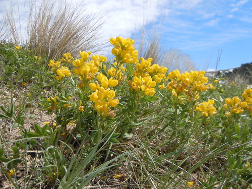
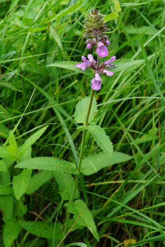

American Bumble Bee
Bombus pensylvanicus native bee
A long-tongued social bumble bee. Nests usually on the surface in long grass, sometimes underground. Forages on Astragalus, Cirsium, Cornus, Echinacea and others.
44 documented plant relationships.
sips nectar at
Bastard ToadflaxComandra umbellataBlanketflowerGaillardia aristata Boreal YarrowAchillea borealis
Boreal YarrowAchillea borealis Douglas Goldman, some rights reserved (CC BY-SA), uploaded by Douglas Goldman") Canada GoldenrodSolidago canadensis
Canada GoldenrodSolidago canadensis Jim Morefield, some rights reserved (CC BY), uploaded by Jim Morefield") Canada Milk VetchAstragalus canadensis
Canada Milk VetchAstragalus canadensis aarongunnar, some rights reserved (CC BY), uploaded by aarongunnar") DewberryRubus pubescens
DewberryRubus pubescens Matt Lavin, some rights reserved (CC BY-SA)") Dotted BlazingstarLiatris punctata
Dotted BlazingstarLiatris punctata Nick Block, some rights reserved (CC BY), uploaded by Nick Block") Eastern Red ColumbineAquilegia canadensis
Eastern Red ColumbineAquilegia canadensis Tom Pollard, some rights reserved (CC BY), uploaded by Tom Pollard") Evening PrimroseOenothera biennis
Evening PrimroseOenothera biennis Douglas Goldman, some rights reserved (CC BY-SA), uploaded by Douglas Goldman") FireweedChamaenerion angustifolium
FireweedChamaenerion angustifolium Douglas Goldman, some rights reserved (CC BY-SA), uploaded by Douglas Goldman") Flat-topped GoldenrodEuthamia graminifolia
Flat-topped GoldenrodEuthamia graminifolia Alan Prather, some rights reserved (CC BY), uploaded by Alan Prather") Giant HyssopAgastache foeniculum
Giant HyssopAgastache foeniculum Tero Laakso, some rights reserved (CC BY-SA)") Jerusalem ArtichokeHelianthus tuberosusMany-flowered Aster (Tufted White Prairie Aster)Symphyotrichum ericoides
Jerusalem ArtichokeHelianthus tuberosusMany-flowered Aster (Tufted White Prairie Aster)Symphyotrichum ericoides Jason Sturner, some rights reserved (CC BY)") Nodding OnionAllium cernuum
Nodding OnionAllium cernuum Joshua Mayer, some rights reserved (CC BY-SA)") Prairie RoseRosa arkansanaPrairie ThistleCirsium flodmaniiPrairie TurnipPediomelum esculentum
Prairie RoseRosa arkansanaPrairie ThistleCirsium flodmaniiPrairie TurnipPediomelum esculentum Георгий Виноградов (Georgy Vinogradov), some rights reserved (CC BY), uploaded by Георгий Виноградов (Georgy Vinogradov)") Purple Avens (Water Avens)Geum rivalePurple ConeflowerEchinacea angustifoliaPurple Prairie CloverDalea purpurea
Purple Avens (Water Avens)Geum rivalePurple ConeflowerEchinacea angustifoliaPurple Prairie CloverDalea purpurea Douglas Goldman, some rights reserved (CC BY-SA), uploaded by Douglas Goldman") Purple-stemmed Tall Aster (Swamp Aster)Symphyotrichum puniceum
Purple-stemmed Tall Aster (Swamp Aster)Symphyotrichum puniceum Matt Lavin, some rights reserved (CC BY-SA)") RabbitbrushEricameria nauseosa
RabbitbrushEricameria nauseosa Alan Rockefeller, some rights reserved (CC BY), uploaded by Alan Rockefeller") Red ColumbineAquilegia formosaRocky Mountain BeeplantPeritoma serrulata
Red ColumbineAquilegia formosaRocky Mountain BeeplantPeritoma serrulata Douglas Goldman, some rights reserved (CC BY-SA), uploaded by Douglas Goldman") Self-healPrunella vulgaris
Self-healPrunella vulgaris Douglas Goldman, some rights reserved (CC BY-SA), uploaded by Douglas Goldman") Showy MilkweedAsclepias speciosa
Showy MilkweedAsclepias speciosa aarongunnar, some rights reserved (CC BY), uploaded by aarongunnar") Smooth AsterSymphyotrichum laeveSneezeweedHelenium autumnaleStiff Sunflower (Rhombic-leaved Sunflower)Helianthus pauciflorus
Smooth AsterSymphyotrichum laeveSneezeweedHelenium autumnaleStiff Sunflower (Rhombic-leaved Sunflower)Helianthus pauciflorus Matt Lavin, some rights reserved (CC BY-SA)") Three Flowered Avens (Prairie Smoke, Old Man's Whiskers)Geum triflorum
Three Flowered Avens (Prairie Smoke, Old Man's Whiskers)Geum triflorum Kevin Krebs, some rights reserved (CC BY), uploaded by Kevin Krebs") Water SmartweedPersicaria amphibia
Water SmartweedPersicaria amphibia Mary Krieger, some rights reserved (CC BY), uploaded by Mary Krieger") Western SnowberrySymphoricarpos occidentalis
Western SnowberrySymphoricarpos occidentalis Esben Kjaer, some rights reserved (CC BY), uploaded by Esben Kjaer") White Prairie CloverDalea candida
White Prairie CloverDalea candida tzeducation, some rights reserved (CC BY), uploaded by tzeducation") Wild BergamotMonarda fistulosa
Wild BergamotMonarda fistulosa Pohled 111, some rights reserved (CC BY-SA)") Wild ChivesAllium schoenoprasum
Wild ChivesAllium schoenoprasum Matt Lavin, some rights reserved (CC BY-SA)") Wild LicoriceGlycyrrhiza lepidota
Wild LicoriceGlycyrrhiza lepidota
Boreal YarrowAchillea borealisCanada GoldenrodSolidago canadensisCanada Milk VetchAstragalus canadensisDewberryRubus pubescensDotted BlazingstarLiatris punctataEastern Red ColumbineAquilegia canadensisEvening PrimroseOenothera biennisFireweedChamaenerion angustifoliumFlat-topped GoldenrodEuthamia graminifoliaGiant HyssopAgastache foeniculum
Golden BeanThermopsis rhombifoliaGumweedGrindelia squarrosaJerusalem ArtichokeHelianthus tuberosusMany-flowered Aster (Tufted White Prairie Aster)Symphyotrichum ericoides
Marsh Hedge Nettle (Marsh Woundwort)Stachys pilosa var. pilosaMaximilian SunflowerHelianthus maximilianiNodding OnionAllium cernuumPrairie RoseRosa arkansanaPrairie ThistleCirsium flodmaniiPrairie TurnipPediomelum esculentumPurple Avens (Water Avens)Geum rivalePurple ConeflowerEchinacea angustifoliaPurple Prairie CloverDalea purpureaPurple-stemmed Tall Aster (Swamp Aster)Symphyotrichum puniceumRabbitbrushEricameria nauseosaRed ColumbineAquilegia formosaRocky Mountain BeeplantPeritoma serrulataSelf-healPrunella vulgarisShowy MilkweedAsclepias speciosaSmooth AsterSymphyotrichum laeveSneezeweedHelenium autumnaleStiff Sunflower (Rhombic-leaved Sunflower)Helianthus pauciflorusThree Flowered Avens (Prairie Smoke, Old Man's Whiskers)Geum triflorumWater SmartweedPersicaria amphibiaWestern SnowberrySymphoricarpos occidentalisWhite Prairie CloverDalea candidaWild BergamotMonarda fistulosaWild ChivesAllium schoenoprasumWild LicoriceGlycyrrhiza lepidota